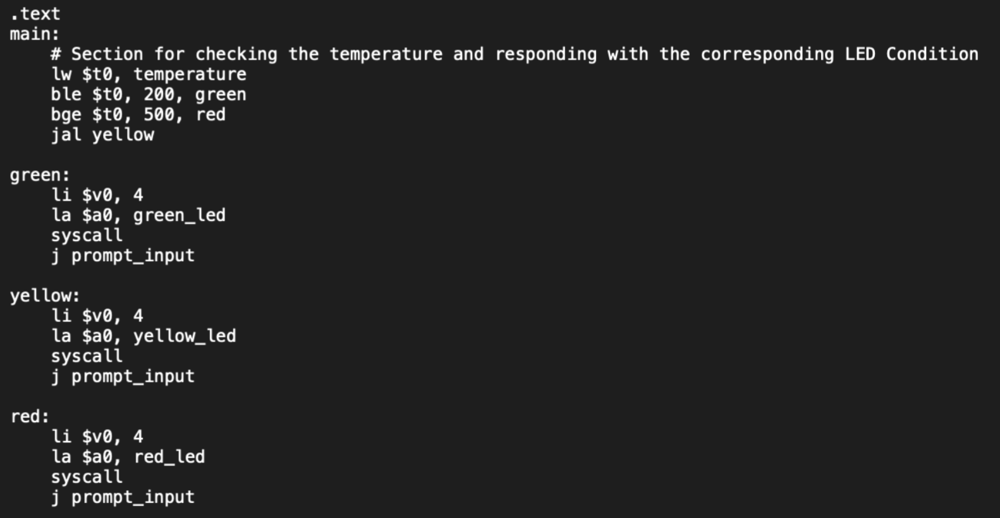

Dean's List - Bradley University
Recognized for outstanding academic performance for multiple semesters.
CompTIA Security+ Certification
Earned certification showcasing knowledge in cybersecurity fundamentals.
Projects
Personal Portfolio Website
Created a responsive web portfolio using HTML, CSS, and JavaScript. Includes interactive features such as a contact form and project showcase.
Assembly Heater Project
Assembly Project that allowed a user to check the temperature from the user input, then display the correct LED string message based on the current temperature after a timer triggers the LED signal.

Experiences
Digital Scholars Chance Program at UIC
Went through an 8-week program that focused on different computer science-related design projects. It was an intensive program with "hands-on" training in real-world settings, covering topics in game design and software development.
ACE Program Downtown Chicago
Gained insights into Architecture, Construction, and Engineering through weekly sessions downtown, exploring career paths and real-life scenarios. Frequently visited various Chicago buildings to learn about their history and construction.